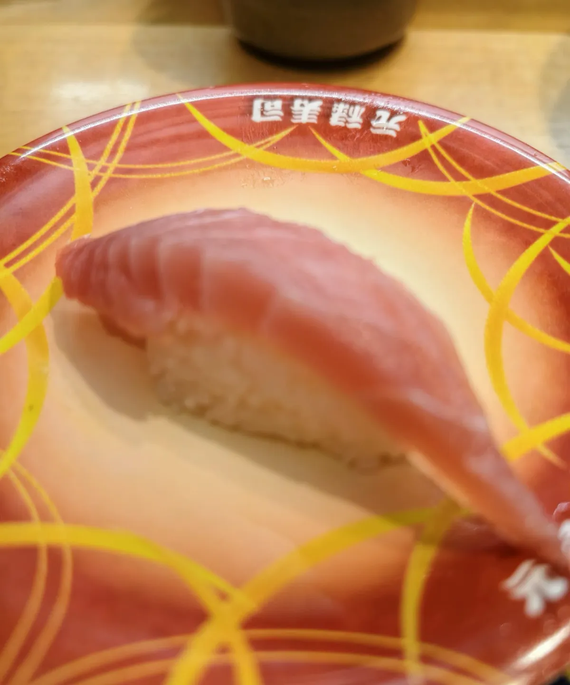
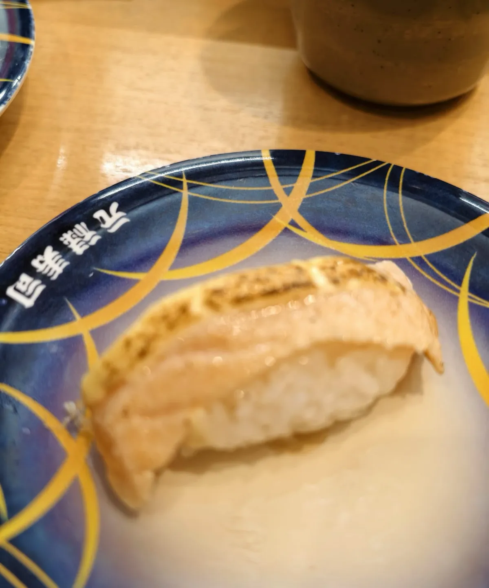
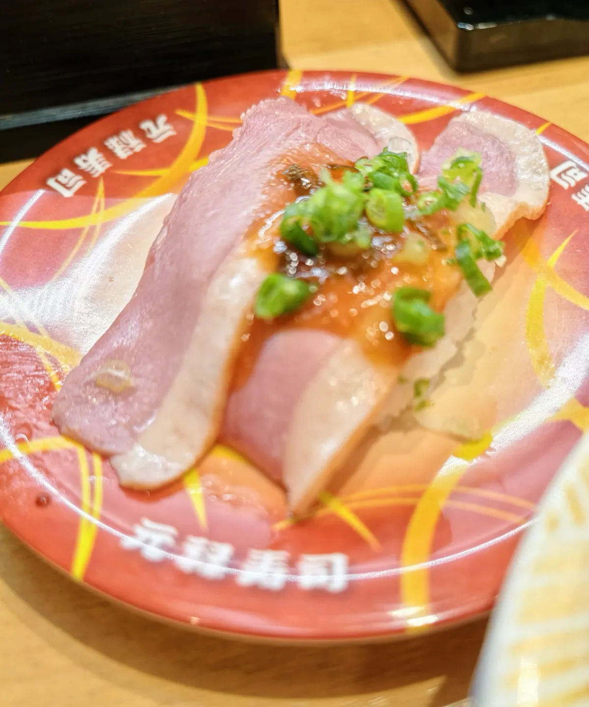
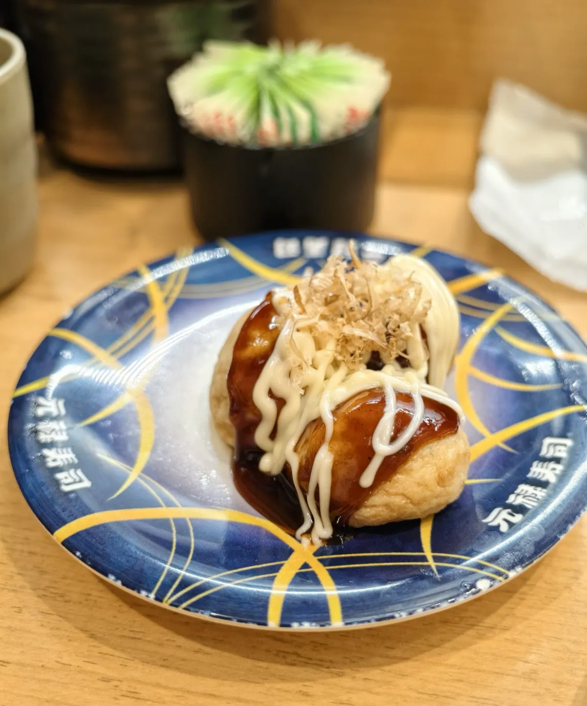

元祿壽司（心斎橋店）：兩個人 3103 日圓，五項加埋一個都唔差
大阪心斎橋一間按盤色計價嘅壽司店。2026-09-20 午市去，兩個人，自費，埋單 3103 日圓（含稅）。一句總結：食材肉眼可見咁新鮮，醋飯做得好，喺心斎橋呢種地段食到呢個質素，性價比高 —— 下次嚟大阪會再去。下面順便對一次數：四種盤色加一個茶碗蒸，五項加埋啱啱等於 3103，一個日圓都唔差。
食咗咩，同幾多錢
當日紀錄
到訪日期：
點咗咩（兩個人）：
最終埋單：
營業時間：
地址：
價錢、榜單同人流呢啲嘢會變，所以佢哋抽咗出嚟獨立標明核實月份 —— 實食紀錄呢個分區嘅硬規則之一。正文只留唔會變嗰部分。
五項加埋，一個日圓都唔差
價錢拆細
逐項金額：
逐項對一次：
- 165 日圓赤盤 × 5 ＝ 825
- 193 日圓青盤 × 4 ＝ 772
- 253 日圓黃盤 × 2 ＝ 506
- 750 日圓白盤 × 1 ＝ 750
- 茶碗蒸 × 1 ＝ 250
825 ＋ 772 ＋ 506 ＋ 750 ＋ 250 ＝ 3103 日圓，同埋單金額一個日圓都唔差。
呢個係本站實食紀錄第一次一張多項帳單逐項加埋，同實付完全對得上。之前幾篇唔係咁：戀上樂山小吃嗰篇，手上三項單價加埋 ¥27，對唔到套餐嘅 ¥50.5，中間嗰段冇逐項價，本站唔會砌數填。呢度對得齊，係因為計價方法本身就係逐碟計：盤色就係價錢，碟數就係數量，冇套餐、冇團購券，五項以外亦冇其他加項。
全篇金額一律係日圓、含稅。本站唔寫人民幣或者港幣折算 —— 匯率會過期，而當日匯率冇記低，寫一個換算出嚟只會係一個好快就錯嘅數。
金槍魚赤身同炙烤壽司

食材肉眼可見咁新鮮。
金槍魚赤身粉嫩通透，紋理清晰。入口唔係軟爛，帶微微彈性，鮮甜味慢慢化開。


炙烤壽司表面嘅油脂被炙出嚟，配特製醬汁同蔥花，一啖落去油脂喺舌尖爆開。
大阪燒風格腐皮壽司同茶碗蒸

大阪燒風格嘅腐皮壽司，木魚花喺度跳。醬汁濃郁，有層次。
茶碗蒸（250 日圓）滑嫩似布丁，高湯鮮味足。食完一輪生冷壽司，嚟一碗熱嘅好暖胃。茶碗蒸本次冇影相。
醋飯、落單同排隊
醋飯溫度控制得好，酸度適中，米粒飽滿有嚼勁。食完之後，嘴裡冇廉價醬油嗰種死鹹味，只有淡淡回甘。
點餐系統順暢，係新幹線送餐。本站嗰次唔使大排長龍 —— 不過呢個係一次到訪嘅觀察，唔代表每一日每個時段都一樣。
值唔值得專登去
平台數據（大眾點評，2026-09-23 截取，唔係本站評分）
評分：
榜單同紀錄：
支付同餐牌：
本站判斷
判斷：
總結：喺心斎橋呢種地段食到呢個質素，性價比高，下次嚟大阪會再去。平台人均係所有用戶嘅滾動平均，唔係本次埋單；本次實付係上面嗰 3103 日圓，兩個人。
同一次大阪行程嘅另一篇：コメダ珈琲店（淀屋橋南店），一頓早餐。
本分區其餘嘅實食紀錄一樣係咁寫：一次到訪、一個日期、一組會過期嘅數。
常見問題
兩個人食咗幾多錢？
合共 3103 日圓，含稅，自費。赤盤 5 碟、青盤 4 碟、黃盤 2 碟、白盤 1 碟，加一個茶碗蒸。本站唔寫人民幣或港幣折算，因為當日匯率冇記低。
逐項加埋對唔對得上埋單金額？
對得上。825 ＋ 772 ＋ 506 ＋ 750 ＋ 250 ＝ 3103 日圓，一個日圓都唔差。呢個係本站實食紀錄第一次一張多項帳單逐項加埋同實付完全對得上。
要唔要排隊？
本站嗰次唔使大排長龍，點餐系統亦順暢，係新幹線送餐。呢個係一次到訪嘅觀察，唔代表每一日每個時段都一樣。
可唔可以用支付寶，有冇中文菜單？
平台資料顯示支持支付寶／銀聯支付，亦有中文菜單。呢兩樣係大眾點評 2026-09-23 嘅平台標籤，唔係本站喺店內試過，出發前建議自行確認。